Everything here is live.
No case studies. No mockups. No screenshots of work that never shipped. Every card below opens the real site in a new tab, and the build fails if one of those links stops answering.
- In stock
- 13
- Broken links
- 0
- Last checked
- 2026-09-19
The shelf
Thirteen sites, all of them answering right now.
Clinics, restaurants, a bakery, salons, a perfume house and a record. Each card opens the real deployment, not a picture of one.
-
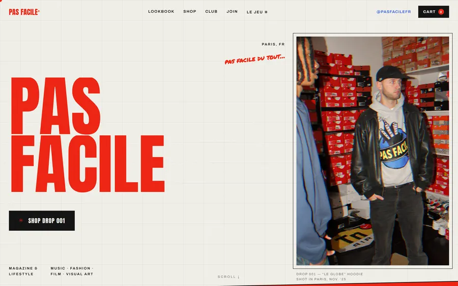
PAS FACILE
Fashion brand
A Paris magazine and lifestyle label. The shop, the lookbook and a playable game all live on one page, so nobody has to navigate to be sold to.
9 looksone pinned lookbook
Open PAS FACILE, opens in a new tab -
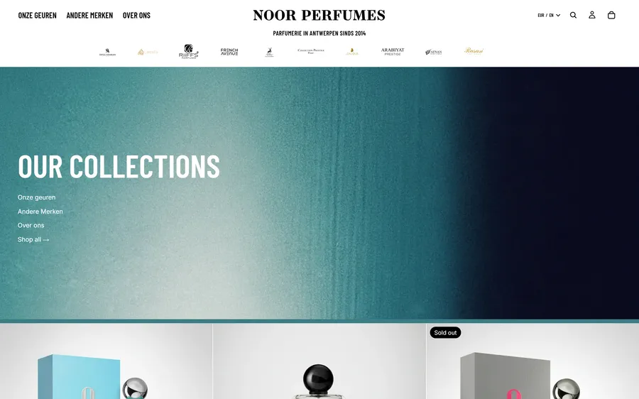
NOOR PERFUMES
Perfume house
An Antwerp maison for rare Arabian extraits. The flacon in the hero is real 3D in the browser, not a photograph, so it turns as the visitor moves.
3D flaconrendered live, not filmed
Open NOOR PERFUMES, opens in a new tab -
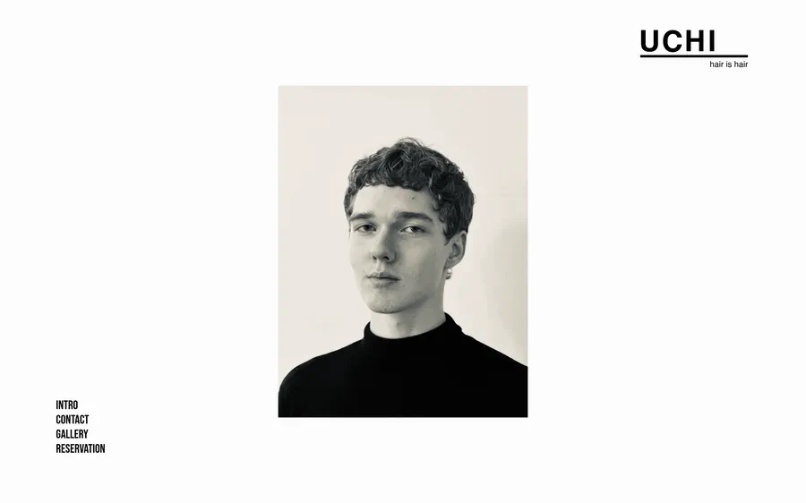
UCHI
Hair salon
Booking built into the site instead of handed to a widget. It knows a cut plus a colour plus a wash is one visit, and that two colour processes are not.
4 stepsfrom landing to booked
Open UCHI, opens in a new tab -
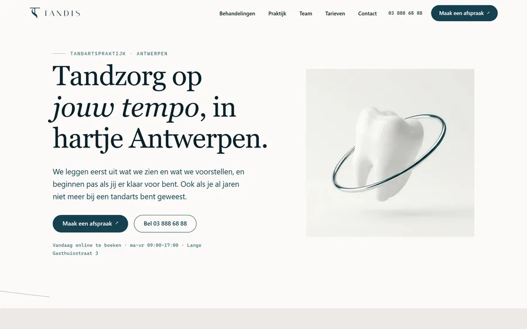
Tandis
Dental practice
A practice on the Lange Gasthuisstraat that explains the treatment before it quotes it. Appointments hand off to the Doctena account they already run.
Doctenatheir own scheduler, kept
Open Tandis, opens in a new tab -
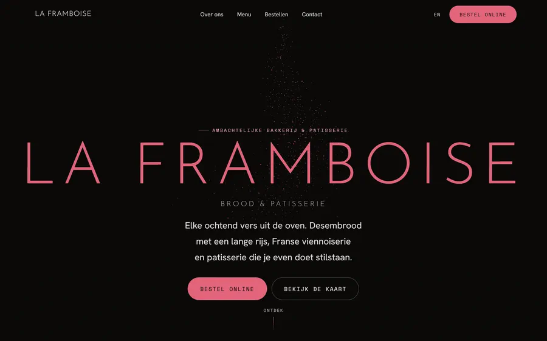
La Framboise
Bakery
Every item on the menu is marked up with its own price and section, so search engines can answer what a loaf costs without anyone opening the site.
Menu schemaevery dish, priced
Open La Framboise, opens in a new tab -
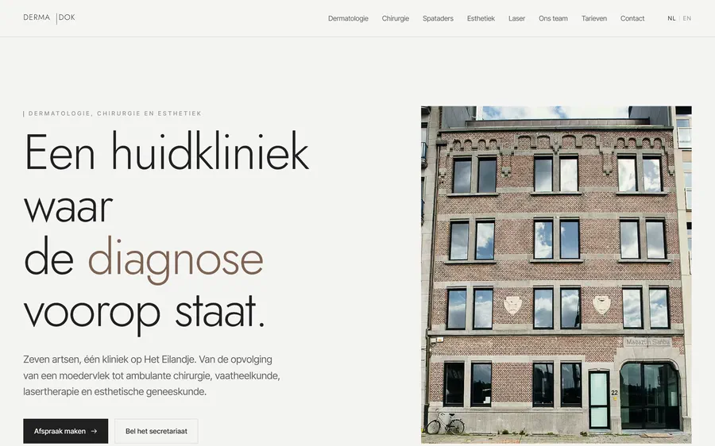
Dermadok
Dermatology clinic
Seven doctors, one clinic on Het Eilandje, and a visitor who needs to find the right one fast. Dutch and English from a single build.
7 doctorsone clinic, two languages
Open Dermadok, opens in a new tab -
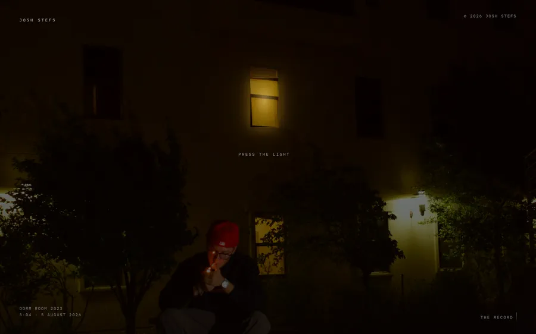
Josh Stefs
Recording artist
Three singles, one a year. The lit window in the record sleeve is the play button, and pressing it runs the page backwards through his three years.
3 singlesthree years, one page
Open Josh Stefs, opens in a new tab -
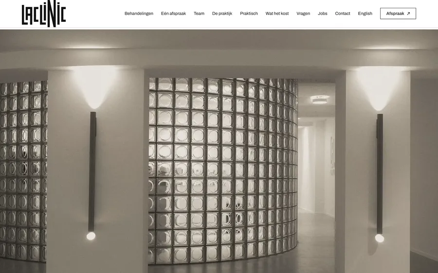
LACLINIC DENTAL
Dental practice
No patient stop and no waiting list, said plainly on the page, because that is the one thing a person in pain is searching for.
65 pagesDutch and English
Open LACLINIC DENTAL, opens in a new tab -
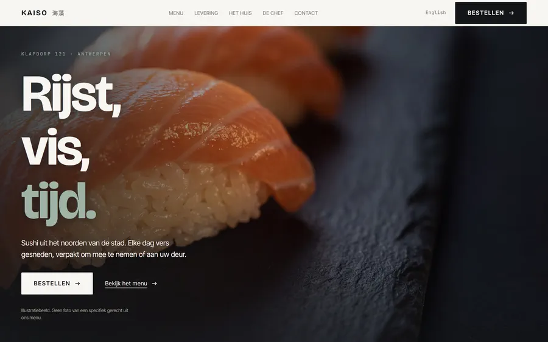
Kaiso Sushi
Restaurant
A full sushi menu on Klapdorp, every dish its own page in both languages, filterable before anyone picks up the phone to ask what is in it.
149 disheseach one structured
Open Kaiso Sushi, opens in a new tab -
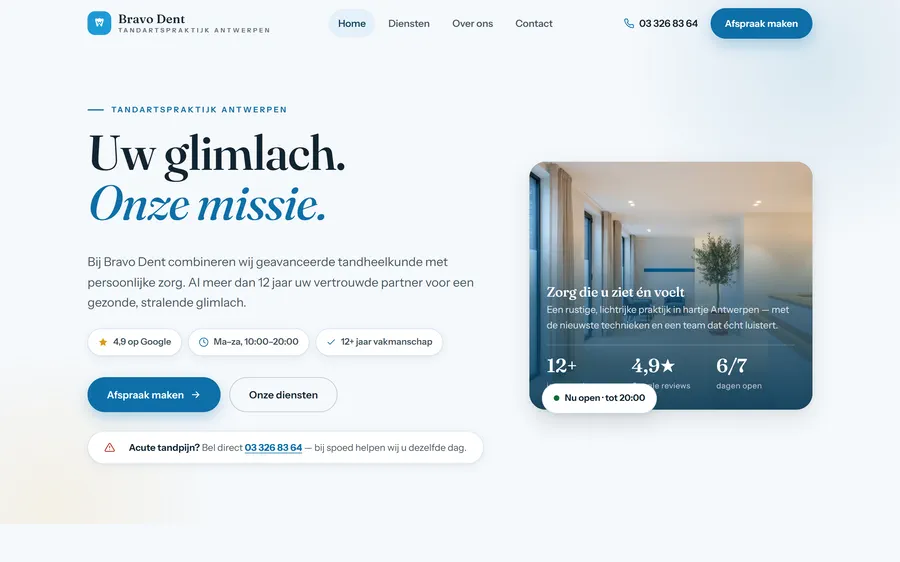
Bravo Dent
Dental practice
A practice on the Turnhoutsebaan. Opening hours, address and ratings are marked up as data, so Google prints them straight into the result.
Dentist schemahours, address, ratings
Open Bravo Dent, opens in a new tab -
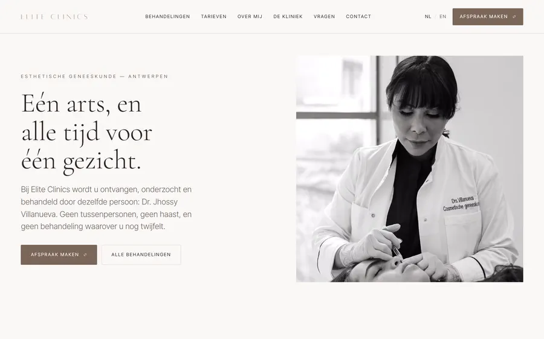
Elite Clinics
Aesthetic medicine
Nineteen Dutch routes with a full English mirror, one treatment per page, so each procedure can rank for the thing people actually type.
19 routesmirrored in English
Open Elite Clinics, opens in a new tab -
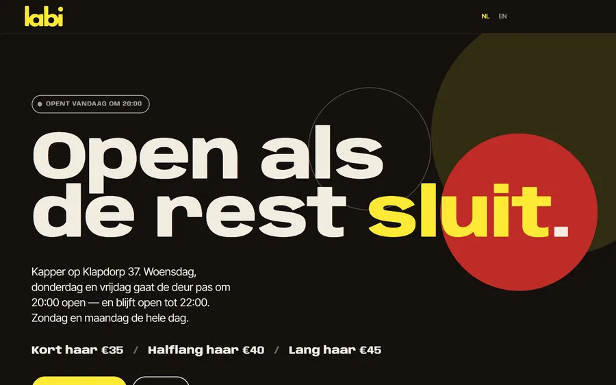
Labi
Barbershop
Open until 22:00, which is the whole pitch, so it leads. Hours and prices come from the booking system the shop already uses.
Open to 22:00the reason people come
Open Labi, opens in a new tab -
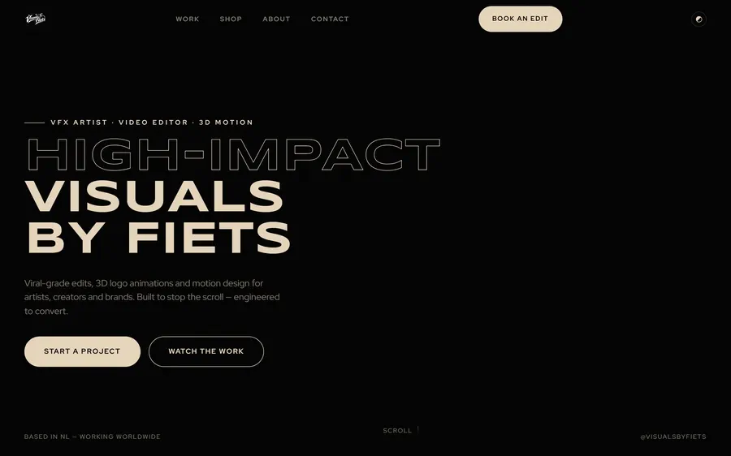
Visuals by Fiets
Motion studio
The motion and VFX arm of the same shop. Every price is on the page, because a rate card answers the first question a client has.
10M+combined views
Open Visuals by Fiets, opens in a new tab
The long version
PAS FACILE
A Paris magazine and lifestyle label. The shop, the lookbook and a playable game all live on one page, so nobody has to navigate to be sold to.
-
The hero is a live Three.js shader. Mouse speed drives a ripple through the image, and it degrades to a plain photograph when a device cannot run WebGL, so nobody gets a blank screen.
-
The lookbook pins and scrolls sideways under one trigger. Nine looks in the space a normal page gives three, which is how a small catalogue reads as a full collection.
-
Drop 001 takes real orders. Hover swaps the product image, quick add works from the grid, and the cart survives a reload so a half-finished basket is still there tomorrow.
-
PAS FACILE RUN is a canvas game inside the page, with a monthly leaderboard and a real prize. It exists because a reason to come back beats a reason to visit once.
What it does for you
A site is not a design. It is how you get found and how you get booked.
Six things every build on this shelf does, and what each one is worth to the business paying for it.
Found when someone asks an AI, not only when they search
People increasingly ask an assistant instead of typing into a search box, and an assistant can only repeat what it can read. Every clinic, restaurant and shop here publishes its hours, address, treatments and prices as machine-readable data: Dentist, MedicalClinic, Restaurant, Bakery, Menu, OpeningHoursSpecification. That is the difference between being quoted correctly and being left out of the answer.
Ranked for what people type, not for what you call it
One page per treatment, per dish, per service, each with its own title, description and entry in the sitemap. Elite Clinics runs nineteen Dutch routes with a full English mirror, LACLINIC has sixty-five pages, and Kaiso gives each of 149 dishes its own. A one-page site competes for exactly one phrase.
Loaded before the visitor gives up
These are static files. Nothing has to wake up and no database gets queried, so there is nothing there to be slow. This page scores 98 or better for performance on Google's mobile test, measured on the live site, and shows its first words in about a second on a throttled phone. Speed has been a Google ranking signal since 2021, and a slow site rarely gets a second chance.
Dutch and English, done properly
Not a translation widget bolted on afterwards. Two real versions out of one build, each with its own URLs and hreflang pointing at the other, plus x-default, so an Antwerp local is served Dutch and a visitor is served English. Six of the sites here ship both.
Usable by everyone, which is the same work as SEO
Real contrast, a focus ring you can see, operable end to end from a keyboard, every image described. This page has zero axe-core violations and scores 100 on accessibility. A screen reader and a search crawler read a page the same way, so the work pays twice.
Booking where the visitor already is
Nobody should have to telephone during opening hours to give you money. Tandis keeps the Doctena account it already had, Labi pulls live hours from Setmore, Elite hands off to Clinicminds, and UCHI has a four-step flow built into the site itself. The booking happens on the page they are already reading.